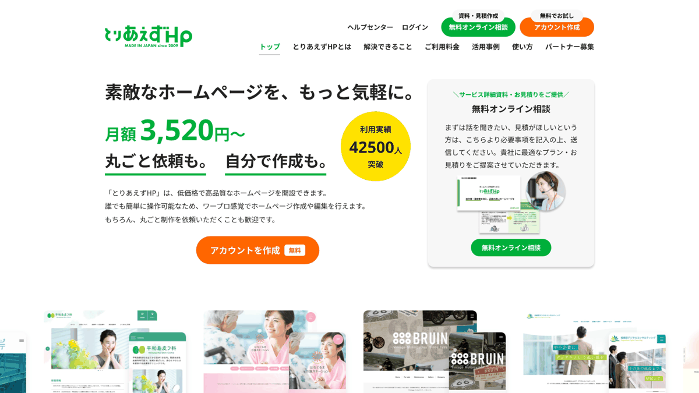
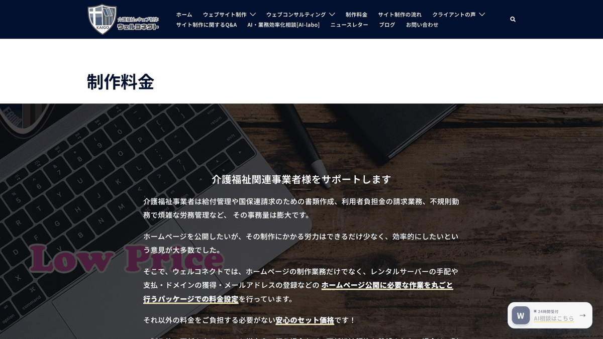

相談支援事業所は、障害福祉サービスを使い始める人が最初に出会うことの多い窓口です。ホームページを見るのは、本人や家族だけでなく、市町村の担当者、病院の相談員、学校や障害福祉サービス事業所の職員など、相談先を探している支援者も少なくありません。
そのため相談支援事業所のホームページでは、活動の様子よりも、「今、新しい相談を受け付けているか」「どの地域に対応しているか」「どうやって相談すればよいか」がすぐにわかることが大切です。受付状況は変わりやすいため、更新のしやすさも重要なポイントになります。
この記事では、相談支援事業所のホームページ制作に対応している4社（とりあえずHP・福祉ITパートナー・ウェルコネクト・Onenet）について、各社の公式サイトで確認できた料金や対応内容を比較します。掲載順は、1年間の費用の安い順を基本にしていますが、運営の関連会社である福祉ITパートナーは、先頭にせず2番目に掲載しています。
目次

4社の違いを一覧で比べられます。1年間にかかる費用の目安（初期費用＋月額×12か月）を中心に、福祉への理解や更新のしやすさを◎○△で評価しています。金額は税込相当（税別表示の会社は10％を加えた額）です。
← 左右にスライドして比較できます →
| 比較項目 | とりあえずHP自分で作成・低月額型 | 福祉ITパートナー低価格・短納期型 | ウェルコネクト介護福祉特化・更新込み型 | Onenet福祉特化・自社更新型 |
|---|---|---|---|---|
| 1年間の費用の目安税込相当・初期費用＋月額×12か月 | 50,160円初期7,920円＋月額3,520円×12か月（自分で作成コース・ライトプラン） | 19,800円～55,000円ライト19,800円／ブランディング55,000円（月額なし。更新を自社で行う場合。税区分は公式サイトに記載なし） | 159,000円初期75,000円＋月額7,000円×12か月（STANDARD。独自ドメインは別） | 197,560円初期107,800円＋月額7,480円×12か月（5ページまで） |
| 福祉への理解 | ○全業種向けのサービス。障害福祉の業務ソフト「かべなしクラウド」が、障害福祉事業所向けに会員特別価格で案内 | ◎福祉・介護・医療分野に特化。精神保健福祉士が運営。対応事業所に相談支援事業所・計画相談支援・障害児相談支援を明記 | ◎2006年から介護・福祉業界に特化。制作実績に計画相談・障害児相談を行う事業所あり | ◎福祉業界出身の技術者。制作実績に相談支援事業所を運営する法人あり |
| デザインの自由度 | △240種類以上のテンプレートから選んで作成。独自のデザインは別途見積もり | ○ブランディングは個別デザイン（ライトは基本デザイン） | ○「自由なデザイン設計」を案内。情報の順番や相談ボタンの位置まで設計 | ○カスタム可能なテンプレート |
| 相談しやすさ | ○無料オンライン相談あり。30日間の無料体験あり | ◎無料相談あり。福祉の現場経験者が対応 | ○問い合わせ・無料のサイト診断あり。遠方はメール・電話・オンラインで対応 | ○電話・メール、訪問またはテレビ電話でヒアリング |
| 公開後の更新・サポート | ○管理画面で自分で更新。メール・オンラインのサポートあり | ○自分で更新できる。更新代行は別途相談 | ◎更新は都度依頼でき、回数・文字数の制限なし（デザインのリニューアルを除く） | ○自分で編集できる（マニュアルあり） |
| 納期の目安 | △制作を依頼する場合の納期は公式サイトに記載なし | ◎最短48時間～（通常14日） | △通常1か月半～2か月近く（最短15日程度のケースも） | △公式サイトに記載なし |
| こんな方に | 費用を抑え、受付状況などを自分でこまめに更新したい事業所 | 短期間・低予算で公開し、更新は自分で行う事業所 | 介護・福祉に詳しい相手に、更新まで任せたい法人 | 福祉出身の担当者に相談し、自分たちで更新したい事業所 |
※◎○△は、各社の公式サイトの記載にもとづく、当サイト編集部の評価です（確認日は下記）。◎＝特に充実していると確認できるもの、○＝対応を確認できるもの、△＝限定的、または記載を確認できないものです。セルの小さな文字が評価の根拠です。評価は他社と同じ基準で行っており、当サイトは福祉ITパートナーの関連会社が運営している点にもご留意ください。
※△は、非対応を意味するものではありません。契約前に各社へご確認ください。
※2026年11月15日に各社の公式サイトで確認した情報です。料金やサービス内容は変更される場合があります。契約前に必ず公式サイトで最新情報をご確認ください。
※とりあえずHP・ウェルコネクトは税込表示、Onenetは税別表示に10％を加えた額です。福祉ITパートナーの料金（19,800円・55,000円）は、料金ページに税込・税別の記載がなかったため、表示額のまま載せています。
※とりあえずHPは、かべなしクラウドの契約法人向けに会員特別価格（ライトプランで初期0円・月額2,525円、税込）が案内されています。表の金額は通常価格です。
※福祉ITパートナーは月額契約がなく、公開後の更新を自社で行う前提の金額で、更新代行やサーバー・ドメインの費用は含みません。

1年間の費用は、福祉ITパートナーが19,800円～55,000円、とりあえずHPが50,160円です。どちらも公開後は自分で更新する前提です。
管理画面から自分で更新できるサービスなら、新規受付の停止・再開をその日のうちに反映できます。とりあえずHPは30日間の無料体験で、操作を試してから申し込めます。
更新は都度依頼でき、回数や文字数の制限はないと案内されています（デザインのリニューアルを除く）。反映までの日数は事前に確認しておきましょう。

とりあえずHP（株式会社smallweb）

公式サイトを見る ↗東京都渋谷区の株式会社smallwebが運営する、自分でホームページを作れるサービスです。業種を問わないサービスですが、障害福祉事業所向けの業務ソフト「かべなしクラウド」が、契約法人向けに会員特別価格で案内しています（かべなしクラウドは計画相談支援・障害児相談支援にも対応した業務ソフトです）。
自分で作成コースは初回7,920円、制作依頼コースは初回47,520円（制作費39,600円＋初期費用7,920円）です。月額はライトプラン3,520円、ブログ機能やメールアドレス、電話サポート（予約制）が付くスタンダードプラン5,940円です（いずれも税込）。全プランで独自ドメイン・SSL・最大100ページ・問い合わせフォームに対応しています。
メリット
- 月額が4社の中で最も低く、30日間の無料体験で操作を試してから申し込める
- 文字と写真を入れるだけで作れ、受付状況やお知らせを自分ですぐ更新できる
- 独自ドメイン・システム環境・セキュリティ対応・サポートが月額に含まれる
- 作成を依頼したい場合は、制作依頼コース（39,600円）もある
注意点
- デザインはテンプレートから選ぶ形で、独自性の高いデザインは別途見積もり
- 自分で作成する場合、文章や構成は事業所で考える必要がある
- 全業種向けのサービスで、相談支援の制作実績は公式サイトで確認できなかった
- 最低契約期間や制作依頼時の納期は、公式サイトで確認できなかった
こんな方におすすめ
費用を抑えて、受付状況やお知らせを職員が自分で更新したい事業所、かべなしクラウドを利用している法人
福祉ITパートナー
 公式サイトを見る ↗
公式サイトを見る ↗
福祉・介護・医療分野のホームページ制作と、IT活用の支援を行っています。料金ページでは、対応する事業所として相談支援事業所・計画相談支援・地域移行支援・地域定着支援・障害児相談支援などを挙げています。なお、当サイトの運営者は同社の関連会社です。他社と同じ基準で確認し、掲載しています。
おまかせライトは1ページ構成（制作中の修正1回まで）、ブランディングは事業所に合わせて構成を提案（修正3回まで）です。2026年11月15日時点の料金ページには、2プランの金額について税込・税別の記載がありませんでした。サーバー契約・ドメイン取得・公開作業は基本料金に含まれません。
メリット
- 1年間の費用が4社の中で最も低く、月額契約もない
- 素材がそろえば最短48時間からと、制作期間が短い
- スマホ対応、基本のSEO設定、Googleマップの設置が両プランに含まれる
- ブランディングプランでは、文章の整理・言い換えまで相談できる
注意点
- ライトは1ページのみで、問い合わせフォームは付かない（導線の設置のみ）
- サーバー・ドメインの契約と公開作業は別で、実費は自分で確認する必要がある
- 公開後の更新代行は、必要に応じて別途相談となる（金額の記載なし）
- 公式サイトで確認できた制作実績の例は就労継続支援B型とグループホームで、相談支援の実績例は確認できなかった
こんな方におすすめ
短期間で公開したい事業所、月額費用をかけずに始め、更新は自分たちで行える事業所
ウェルコネクト（介護福祉ウェブ制作）

公式サイトを見る ↗神奈川県海老名市を拠点に、2006年から介護・福祉業界に特化してホームページ制作を行っていると案内している制作サービスです。制作実績には、訪問介護・居宅介護支援とあわせて、計画相談・障害児相談を行う大阪府吹田市の事業所が掲載されています。
STANDARDプランは10～15ページ・メールアドレス10個で、初期75,000円・更新維持費月額7,000円（いずれも税込）です。デザイン料やレンタルサーバーの契約などを含むセット料金で、独自ドメインはオプション（月額300円～）です。サイト完成後に、制作費とサイト公開から1年分の更新・維持費をあわせて支払う流れが案内されています。
メリット
- 更新は必要なときに都度依頼でき、回数や文字数の制限がない（デザインのリニューアルを除く）
- 職員体制の変更や新規事業の開始、法改正に伴う変更なども、更新費用を気にせず依頼できると案内している
- 10～15ページを確保でき、相談の流れや対応地域、関係機関向けの情報をページに分けて載せやすい
- 既存サイトの無料診断を行っている
注意点
- 更新維持契約が前提。自分で更新したい場合は別途見積もり
- 独自ドメインはオプションで、月額費用が加わる
- 制作期間は通常1か月半～2か月近くかかることが多いと案内されている
- 対面の打ち合わせは神奈川県・東京都など近隣が中心で、遠方はメール・電話・オンラインで進める
こんな方におすすめ
介護・福祉に詳しい相手に、制作から更新まで任せたい法人、相談員がホームページの作業に時間を割けない事業所
Onenet（合同会社フェレット）
 公式サイトを見る ↗
公式サイトを見る ↗
福祉業界出身の技術者で構成される会社で、福祉事業所向けのホームページ制作サービス「Onenet」を提供しています。公式サイトの制作実績には、児童発達支援・放課後等デイサービスとあわせて相談支援を行う法人や、就労継続支援B型と相談支援事業所を運営する法人のホームページが掲載されています。
公式サイトの表示は税別で、5ページまで（1事業所のみ掲載）は初期98,000円・月額6,800円です。複数の事業所を掲載する10ページまでのプランは初期148,000円・月額9,800円、ブログ機能の設置は29,800円です。
メリット
- 福祉業界出身の技術者が、事業所に合わせて設計とデザインを行う
- スマホ対応、問い合わせフォーム、Googleマップへの登録、独自ドメインの取得が料金プランに含まれる
- 納品後は、テキストや画像を自分で編集でき、編集用のマニュアルも渡される
- 相談支援事業所と、併設の通所事業所などを同時に掲載するプランがある
注意点
- 4社の中で1年間の費用が最も高い。月額費用も続く
- ブログ機能は別料金（29,800円・税別）
- 1ページタイプ（29,800円）は訪問介護・訪問看護のみが対象で、相談支援事業所は5ページまでのプラン以上になる
- 制作期間・契約期間は、公式サイトで確認できなかった
こんな方におすすめ
福祉の現場を知る担当者に相談しながら作りたい事業所、通所事業所などを併設している法人

1年間の費用で比べたうえで、3年間の総額やページ数、更新の方法も確認しましょう。相談支援事業所は少人数で運営していることが多く、更新を誰が担うかが続けやすさを左右します。
← 左右にスライドして比較できます →
| 比較項目 | とりあえずHP自分で作成・ライト | 福祉ITパートナーライト／ブランディング | ウェルコネクトSTANDARD | Onenet5ページまで |
|---|---|---|---|---|
| 1年間の費用の目安税込相当・初期費用＋月額×12か月 | 50,160円初期7,920円＋月額3,520円×12か月 | 19,800円～55,000円月額なし。更新を自社で行う場合 | 159,000円初期75,000円＋月額7,000円×12か月 | 197,560円初期107,800円＋月額7,480円×12か月 |
| 3年間の目安 | 134,640円 | 19,800円／55,000円 （公開後の更新を自社で行う場合） |
327,000円 | 377,080円 |
| ページ数 | 最大100ページ | ライト1ページ／ブランディングは構成を提案 | 10～15ページ | 5ページまで（複数事業所は10ページまで） |
| 相談支援に関する公式サイトの記載 | かべなしクラウド（計画相談支援・障害児相談支援に対応）の会員向けに案内。制作実績は確認できず | 対応事業所に相談支援事業所・計画相談支援・障害児相談支援などを明記 | 制作実績に計画相談・障害児相談を行う事業所あり | 制作実績に相談支援事業所を運営する法人あり |
| サーバー・ドメイン | 月額に独自ドメイン・システム環境を含む | 基本料金に含まれない（自分で契約） | サーバー契約を含む。独自ドメインは月額300円～ | 独自ドメインの取得を含む（実費の扱いは要確認） |
| 追加費用がかかるもの | 制作の依頼（39,600円）、スタンダードプラン（月額5,940円）、独自デザイン（見積もり） | 公開作業、公開後の更新代行（相談） | 独自ドメイン、ブログ（月額1,500円～）、デザインのリニューアル | ブログ機能（29,800円・税別）、ページ追加 |
※1年目＝初期費用＋月額×12か月、3年間＝初期費用＋月額×36か月です。Onenetは税別表示に10％を加えて計算しています（98,000円×1.1＝107,800円、月額6,800円×1.1＝7,480円）。
※とりあえずHPの制作依頼コースの1年目は、初回47,520円＋月額3,520円×12か月＝89,760円（税込）です。
相談支援事業所ならではの見方
- 受付状況の更新：相談員の担当件数によって、新規の相談を受けられる時期と受けられない時期があります。受付状況を自分ですぐ書き換えられるか、依頼する場合は何日で反映されるかを確認しましょう。
- ページ数：相談の流れ、対応地域、相談員の紹介、関係機関向けの情報、公表情報と、載せたい情報は意外と多くあります。1ページで足りるか、ページを分けるかを考えておきましょう。
- 問い合わせフォームの安全性：相談の内容には、障害や病気など配慮が必要な個人情報が含まれます。SSL（暗号化通信）に対応しているか、フォームで集める項目を最小限にできるかも確認しましょう。
問い合わせフォームの注意点は「問い合わせフォームと個人情報」、費用の考え方は「福祉事業所のホームページ制作費用の相場」で解説しています。

相談支援事業所のホームページは、「ここに相談してよいのか」「すぐ相談できるのか」を判断してもらう場です。次の6つを整理しておくと、問い合わせや関係機関からの紹介がスムーズになります。
1．新規相談の受付状況
相談先を探している人や支援者にとって、最初に知りたいのは「今、受け付けてもらえるか」です。
載せたい内容
- 新規の受付の可否（受付中・一時停止中など）と更新日
- 受け付けが難しいときの案内（市町村の窓口など）
- 対応している地域
受付状況は、トップページの目立つ場所に載せ、変わったらすぐ更新できるようにしておきましょう。
2．行っている相談支援の種類
相談支援には、いくつかの種類があります。どれを行っているかを明確にしましょう。
載せたい内容
- 計画相談支援（サービス等利用計画の作成と、利用開始後のモニタリング）
- 障害児相談支援（障害のある子どもの通所サービスの利用計画）
- 地域移行支援・地域定着支援（施設や病院からの地域生活への移行、一人暮らしの緊急時の支援）
3．相談の流れと費用
WAM NETの解説では、サービス利用支援は、サービスの申請時の「サービス等利用計画案」の作成から、支給決定後の連絡調整、「サービス等利用計画」の作成までを行い、継続サービス利用支援でモニタリングと見直しを行うと説明されています。
載せたい内容
- 問い合わせ → 面談 → 計画案の作成 → 支給決定 → 計画作成 → モニタリングの流れ
- 計画相談支援の利用料は無料であること
- 面談の場所（自宅訪問・事業所など）
4．相談支援専門員の紹介
相談支援は、人と人との関係が大切なサービスです。どんな人が担当するのかがわかると、相談のハードルが下がります。
載せたい内容
- 相談支援専門員の人数と、保有資格・得意な分野
- 大切にしている支援の考え方
- 顔写真やプロフィールは、本人の同意を得て掲載
5．関係機関向けの情報
市町村、病院、学校、障害福祉サービス事業所などからの紹介も多いサービスです。支援者が使いやすい情報をまとめましょう。
載せたい内容
- 紹介・連絡の方法（電話・FAX・メールなど）と受付時間
- 連携している事業所や地域の社会資源
- 併設しているサービスがある場合は、その説明（中立性への配慮も添える）
6．個人情報の扱いと公表情報
相談の内容には、心身の状況など特に配慮が必要な情報が含まれます。問い合わせの段階で詳しい内容を書いてもらう必要はありません。
意識したいこと
- フォームは連絡先と簡単な相談の概要だけにし、詳しくは面談で聞く
- 個人情報の取り扱い方針（プライバシーポリシー）を掲載する
- 事業所の情報は、障害福祉サービス等情報公表制度（WAM NET）でも公表する
公表が求められる情報は「障害福祉事業所がホームページ等で公表すべき情報まとめ」をご覧ください。
障害福祉サービスの種類の全体像は「障害福祉サービスの種類一覧」、相談支援専門員と連携するサービス管理責任者については「サービス管理責任者・児童発達支援管理責任者とは」も参考にしてください。

相談支援事業所のホームページで大切なのは、デザインの華やかさよりも、受付状況・対応地域・相談の流れが正確で、すぐに見つかることです。少人数で運営する事業所が多いからこそ、更新を無理なく続けられる依頼先を選びましょう。
- 費用を抑え、受付状況などを自分ですぐ更新したい → とりあえずHP（自分で作成）
- 1年間の費用を最も抑え、短期間で公開したい → 福祉ITパートナー（更新は自分で）
- 介護・福祉に詳しい相手に、更新まで任せたい → ウェルコネクト
- 福祉出身の担当者に相談し、自分たちで更新したい → Onenet
どの会社を選ぶ場合も、1年目と3年間の総額、更新の方法、問い合わせフォームの安全性、サーバー・ドメインの名義を契約前に確認しましょう。
7．よくある質問
新規の相談を受けられない時期は、ホームページに書いたほうがよいですか？
書いておくことをおすすめします。受付できない状況を知らずに問い合わせると、相談したい人にとっても事業所にとっても負担になります。「現在、新規の受付を一時停止しています（◯月◯日更新）」のように日付を添え、ほかの相談先（市町村の障害福祉の窓口など）も案内しておくと親切です。
問い合わせフォームでは、どこまで相談内容を書いてもらえばよいですか？
名前と連絡先、相談したい内容の簡単な概要程度にとどめ、障害や病気の詳しい状況は面談で聞く形が安心です。フォームはSSL（暗号化通信）に対応させ、送信された情報を誰が確認するかも事業所内で決めておきましょう。
同じ法人で障害福祉サービス事業所も運営しています。ホームページは分けたほうがよいですか？
1つのホームページの中でページを分ける方法でも構いません。その場合も、相談支援事業所のページで、利用するサービスは本人の希望にもとづいて選べることや、法人外の事業所も含めて調整することなど、中立的に支援する姿勢を伝えておくと安心されます。
自分で作るサービスと、制作会社に頼むのはどちらがよいですか？
受付状況やお知らせをこまめに更新したい場合は、自分で更新できる仕組みが向いています。文章の作成やページ構成に自信がない場合や、更新に時間を割けない場合は、制作や更新を依頼できるサービスが向いています。とりあえずHPのように、自分で作るサービスでも制作を依頼できるコースがある場合もあります。
本記事の比較について

本記事は、各社の公式サイトで公開されている情報をもとに、料金・特徴・サポート内容などを比較しています。確認日は2026年11月15日です。制度については、WAM NET「サービス利用支援」「継続サービス利用支援」「地域移行支援」「地域定着支援」の解説を参照しました。
金額は税込相当に統一し、税別表示の会社は10％を加えた額で計算しています。税区分の記載がない金額は、その旨を注記しています。掲載順は、1年間の費用の安い順を基本としていますが、運営の関連会社である福祉ITパートナーは、先頭にせず2番目に掲載しています。
当サイトは、掲載企業の一社である福祉ITパートナーの関連会社が運営しています。同社も他社と同じ基準で確認・掲載しており、広告費・紹介料は受け取っていません。
料金やサービス内容は各社の都合により変更される場合があります。最新の情報は、各社の公式サイトで直接ご確認ください。